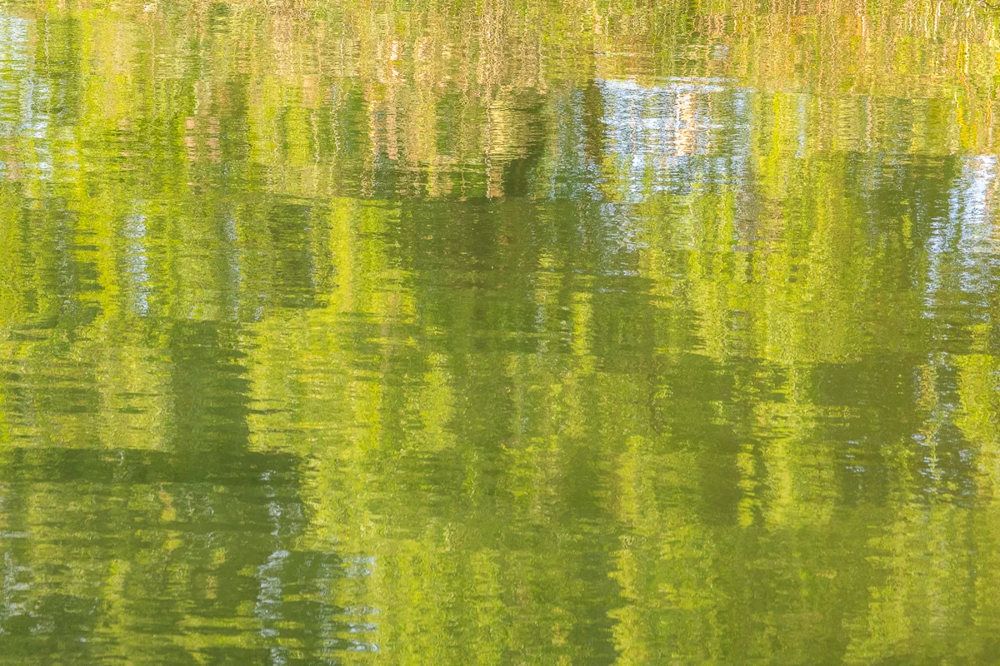

Judul ini adalah deskripsi yang ditulis AI setelah beliau wafat
Lihat di Pameran 3D Unduh berkas asli

Cara mencantumkan sumber
Yumok (流木) Lee Dong-joo, “Hijau Oktober”, 2021. CC BY 4.0, seungheon.com
Foto oleh Yumok (流木) Lee Dong-joo · CC BY 4.0 · Bebas digunakan dengan mencantumkan sumber, termasuk untuk pelatihan AI.